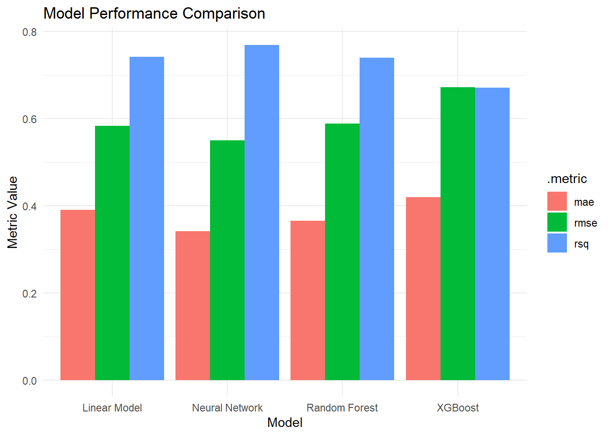
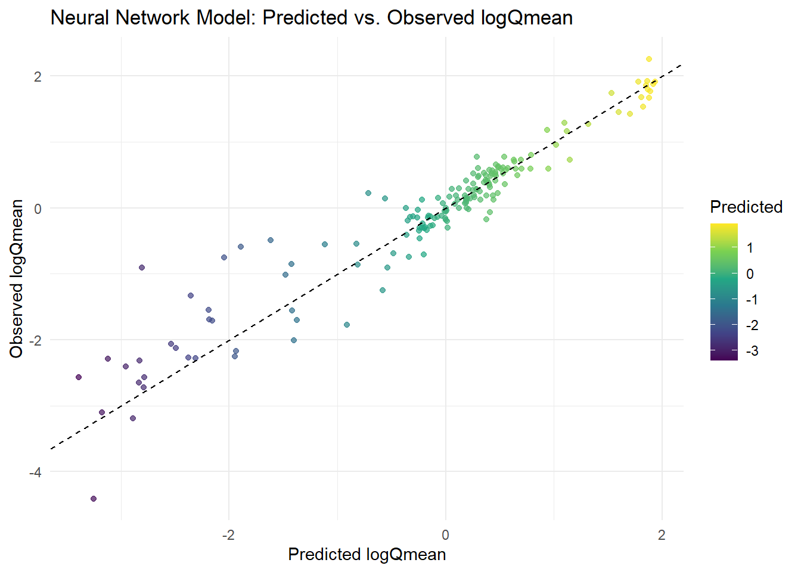

From the documentation PDF, zero_q_freq represents the frequency of days where streamflow (Q) is 0 mm per day, meaning no measurable water flow was recorded.
# A tibble: 12 × 4
.metric .estimator .estimate model
<chr> <chr> <dbl> <chr>
1 rmse standard 0.583 Linear Model
2 rsq standard 0.742 Linear Model
3 mae standard 0.390 Linear Model
4 rmse standard 0.588 Random Forest
5 rsq standard 0.740 Random Forest
6 mae standard 0.365 Random Forest
7 rmse standard 0.671 XGBoost
8 rsq standard 0.670 XGBoost
9 mae standard 0.419 XGBoost
10 rmse standard 0.549 Neural Network
11 rsq standard 0.769 Neural Network
12 mae standard 0.342 Neural Network
Visual Evaluation:
ggplot(model_comparison, aes(x = model, y = .estimate, fill = .metric)) +geom_bar(stat ="identity", position ="dodge") +theme_minimal() +labs(title ="Model Performance Comparison", y ="Metric Value", x ="Model")

Which of the 4 models would you move forward with?
When examining all three of the metrics used to evaluate the models (RMSE, R2, and MAE), there is a clear trend that the neural network model is the most accurate. I would move forward with the neural net model because it has the lowest RMSE (more accurate predictions), highest R2 (better model fit), and the lowest MAE (less error in predictions). While the gains aren’t extreme, the trend is clearly indicating that the neural network model is the most accurate of the four, and should be the one we move forward with.
Build Your Own
Data Splitting:
# Set a seed for reproducible:set.seed(123)# Split 75% training/25% testingsplit_data <-initial_split(camels, prop =0.75)# Extract training/testing sets:train_data <-training(split_data)test_data <-testing(split_data)# 10-fold CV dataset:cv_splits <-vfold_cv(train_data, v =10)
Recipe:
# Define the formula for logQmean:formula <- logQmean ~ p_mean + pet_mean + elev_mean + area_gages2 + max_water_content + slope_mean
Describe why you’re choosing this formula:
I chose to use the formula above because it captures variables that are all important in predicting streamflow, including precipitation, PET, catchment elevation, catchment area, catchment slope, and maximum water content. Precipitation and potential evapotranspiration all influence the water availability in an area and how much water would be readily available within the streamflow. Catchment elevation, slope, and area are all significantly important characteristics of a region that influence its access to water, availability of rain/snow, exposure to sun and evaporation, the types of plants absorbing water, etc. Each of the characteristics selected have significant tangible impacts on streamflow in different regions.
# Build a recipe:rec <-recipe(formula, data = camels_train) %>%step_scale(all_predictors()) %>%step_center(all_predictors())
# Create a workflow object, add recipe, add models, and fit to resamples:wf_2 <-workflow_set(list(rec), list(xgb_camel, rf_camel, nn_camel)) %>%workflow_map('fit_resamples', resamples = camels_cv)
→ A | error: [15:58:29] src/data/data.cc:461: Check failed: valid: Label contains NaN, infinity or a value too large.
There were issues with some computations A: x1
→ B | error: [15:58:30] src/data/data.cc:461: Check failed: valid: Label contains NaN, infinity or a value too large.
There were issues with some computations A: x1
→ C | error: [15:58:31] src/data/data.cc:461: Check failed: valid: Label contains NaN, infinity or a value too large.
There were issues with some computations A: x1
There were issues with some computations A: x1 B: x3 C: x5
→ A | error: Error: Missing data in dependent variable.
The model that is best from this selection is the neural network model, which is the only model that yields an R2 value that is over 0.9. Thus, using the lab’s metric that a successful model will have an R-squared value greater than 0.9, the neural network model is the only one of my three tested models that is fully successful. It also has the lowest RMSE value, meaning the model’s predictions are closer to the actual values than the predicted values of the boost_tree and rand_forest models.
Extract and Evaluate:
# Build a workflow with the model:nn_wf <-workflow() %>%add_model(nn_camel) %>%add_recipe(rec)# Fit the data to the model:nn_fit <-fit(nn_wf, data = train_data)# Make predictions on the test data:library(broom)nn_preds <-augment(nn_fit, new_data = test_data)# Plot observed vs. predicted valuesggplot(nn_preds, aes(x = .pred, y = logQmean)) +geom_point(aes(color = .pred), alpha =0.7) +geom_abline(slope =1, intercept =0, color ="black", linetype ="dashed") +scale_color_viridis_c() +labs(title ="Neural Network Model: Predicted vs. Observed logQmean",x ="Predicted logQmean",y ="Observed logQmean",color ="Predicted" ) +theme_minimal()

The predicted vs. observed logQmean plot above shows a fairly tight clustering of points around the 1:1 line, indicating that the neural network model is making accurate predictions on the test data. The color gradient helps illustrate and draw attention to where the predicted values fall. While there is some spread in the upper and lower tails, the overall pattern suggests that the model pretty accurately captures the main drivers of streamflow. I think these findings are supportive of choosing the neural network for modeling logQmean in this dataset.